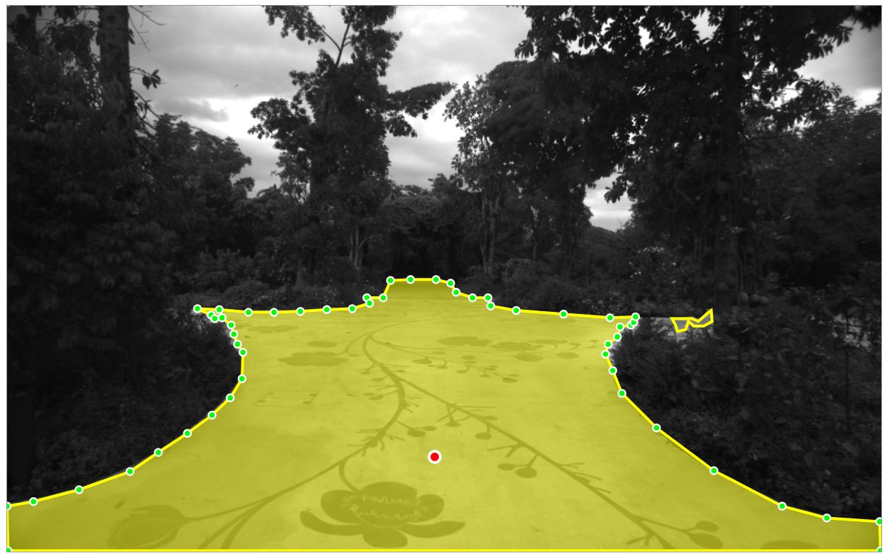
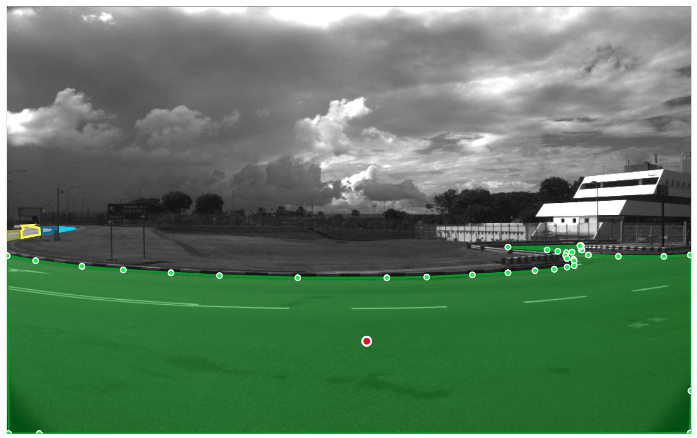
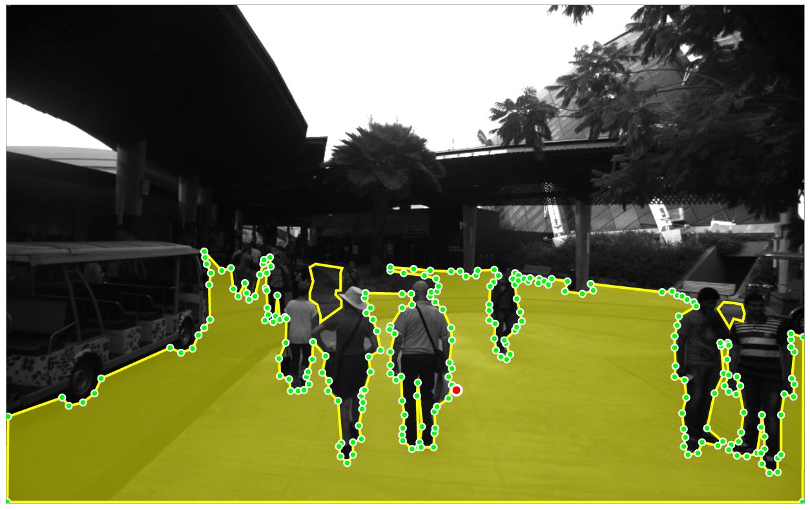
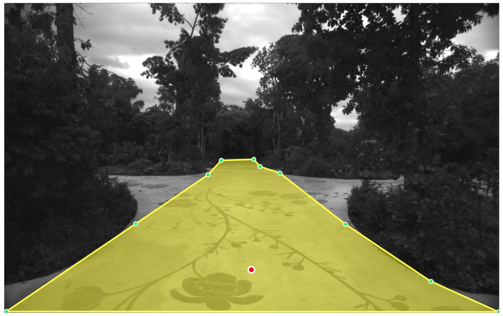
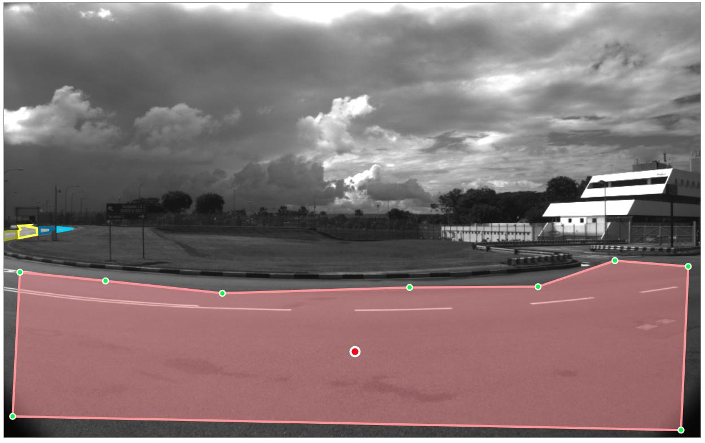
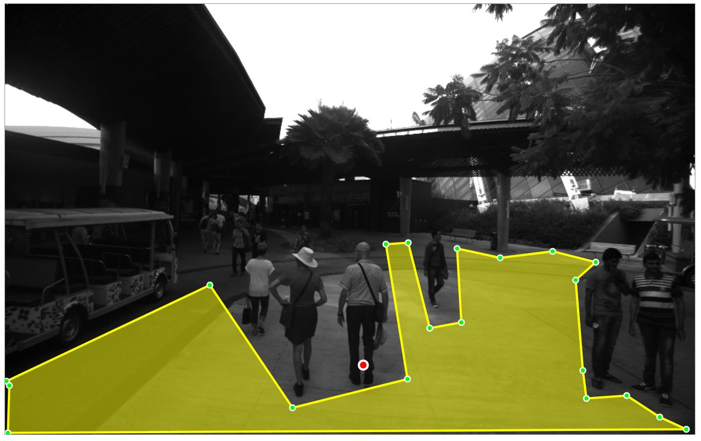

The following steps describe how to draw the polygon(s):
1. Start by pressing the left mouse button at some point along the free space boundary.
2. Continue clicking along the boundary of the free space to create a polygon.
3. Once you have finished clicking along the boundary, either click on the first point or press the right mouse button to complete the polygon.
4. If necessary, create multiple polygons to cover the entire free space.
5. You can modify/delete the polygon by clicking anywhere on its boundary and clicking "Adjust polygon" or "Delete".
|  |  |  |
|  |  |  |